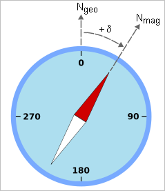
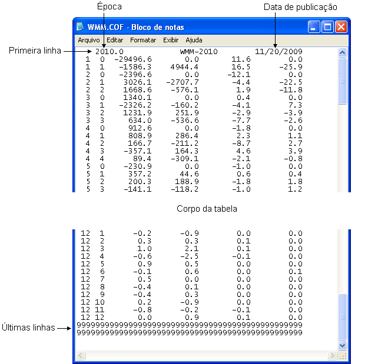

| Menu Funções |
|
Declinação Magnética
A declinação magnética (também chamada variação magnética) é definida como o ângulo entre o meridiano magnético (direção que aponta para o Polo Norte magnético) e o meridiano geográfico (que aponta para o Polo Norte geográfico), em uma dada posição na Terra. Esse ângulo é geralmente expresso em graus para Leste ou Oeste, indicando a direção do desvio do polo magnético terrestre. Convencionalmente, declinação para Leste é expressa como um valor positivo, como ilustrado abaixo:

O R_DAT permite obter a declinação do campo magnético da Terra a partir do Modelo Magnético Terrestre ("WMM - World Magnetic Model") utilizando as coordenadas geográficas do voo (latitude e longitude) mais a altitude geodética (com relação ao modelo geóide) ou pela diferença entre as proas verdadeira e magnética obtidas em voo.
O R_DAT também permite realizar a conversão direta entre as proas verdadeira e magnética, caso a declinação magnética seja conhecida.
Clique no menu “Funções ► Declinação magnética ... ► [opção desejada]” na Barra de Ferramentas.
Obter Declinação Magnética pelo Modelo Magnético Terrestre
O modelo magnético terrestre é fornecido pela NOAA ("National Oceanic and Atmosferic Administration"), órgão do governo dos Estados Unidos responsável pela pesquisa ambiental.
O modelo é composto por um arquivo de coeficientes e um algoritmo de cálculo das componentes magnéticas em função das coordenadas geográficas e da altitude geodética no modelo WGS-84. Também é levada em consideração a data desejada, uma vez que o campo magnético terrestre é variante com o tempo.
O modelo é do tipo preditivo e é atualizado a cada cinco anos, em anos divisíveis por cinco (1995, 2000, 2005, 2010, etc). Cada periodo de cinco anos é denominado "época" (epoch) e é definido pelo ano de início (por exemplo, a época 2010 é válida de 01/01/2010 até 31/12/2014). O uso de coeficientes de épocas distintas da data desejada incorre em erros de exatidão, além do próprio erro do modelo, estimado em até ±0,5 grau.
O arquivo de coeficientes fornecido, denominado "WMM.COF", é um arquivo com codificação de texto e formatação padronizada, como apresentado abaixo:

O arquivo de coeficientes deve ser atualizado quando necessário. A versão mais recente fica disponível para download no site http://www.ngdc.noaa.gov/geomag/WMM/soft.shtml.
O R_DAT mantém o arquivo WMM.COF atual na pasta ..\R_DAT\AuxFcn\DB. Ao atualizar o arquivo, renomeie a versão anterior como "WMM####.COF", onde "####" é o ano da época passada (por exemplo "WMM2005.COF"). O R_DAT lidará automaticamente com as épocas anteriores com essa nomenclatura. Já estão armazenadas nos arquivos do R_DAT as épocas de 2000, 2005 e 2010.
Para obter a declinação magnética, clique em “Funções ► Declinação magnética ... ► Obter pelo modelo magnético terrestre” na Barra de Ferramentas.
A Caixa de
Diálogo solicitará que o usuário indique os
parâmetros para a operação:

● Nos campos
“Lat.” e "Long.", indique a latitude e longitude (em graus) no sistema WGS-84.
● No campo “Alt.”,
indique a altitude geodética (em pés) com relação ao geóide WGS-84.
●
No campo
“Data”, indique a data do voo no formato dd/mm/aaaa. São aceitos também
os formatos dd/mm/aa, mm/aaaa, mm/aa, aaaa e aa, e espaço no lugar da
barra. Se a data do voo estiver cadastrada nas propriedades do arquivo, o campo será preenchido automaticamente..
| Nota: A obtenção da declinação magnética em época diferente da do voo pode gerar erros de exatidão. |
Ao pressionar
“OK”, o R_DAT calculará a declinação magnética segundo o Modelo Magnético Terrestre da época correspondente.
Caso o arquivo de coeficientes da época do voo não esteja disponível, o
R_DAT informará a usuário, que terá a opção de calcular usando os
coeficientes do arquivo WMM.COF atual.

Após definir o
nome e pressionar “OK”, o novo parâmetro será
acrescentado às matrizes de trabalho antes do parâmetro “No.OBS.”.
Obter Declinação Magnética por Diferença entre Proas
Para obter a declinação magnética dessa forma, clique em “Funções ► Declinação magnética ... ► Obter por diferença entre proas” na Barra de Ferramentas.
A Caixa de
Diálogo solicitará que o usuário indique os
parâmetros para a operação:

● No campo
“Verd.”, indique a proa verdadeira (em graus).
● No campo “Mag.”,
indique a proa magnética (em graus).
Ao
pressionar
“OK”, o R_DAT calculará a declinação magnética pela diferença entre a
proa verdadeira e a magnética e resolverá a transição em torno da proa
360/0°.
Conversão entre Proas
Para realizar a conversão, clique em “Funções ► Declinação magnética ... ► Conversão entre proas” na Barra de Ferramentas.
A Caixa de
Diálogo solicitará que o usuário indique os
parâmetros para a operação:

● No campo
“y”, indique a proa conhecida (em graus).
● No campo “Oper.”,
indique a operação desejada (geográfica para magnética ou vice-versa).
● No campo “Declin.”, indique a declinação do campo magnético terrestre (em graus, positivo para Leste) para cômputo do curso magnético. O campo pode ser preenchido de duas formas:
- Caso a declinação magnética seja um parâmetro, indique o parâmetro correspondente na lista;
- Caso deseje utilizar um valor médio conhecido, indique a opção
"Especificar" (1ª opção na lista de parâmetros). A lista se tornará um
campo para inserção do valor numérico.
Ao
pressionar
“OK”, o R_DAT calculará a nova proa e resolverá a transição em torno da proa
360/0°.
| |
Obtenção de curso |
Integração
numérica |
|